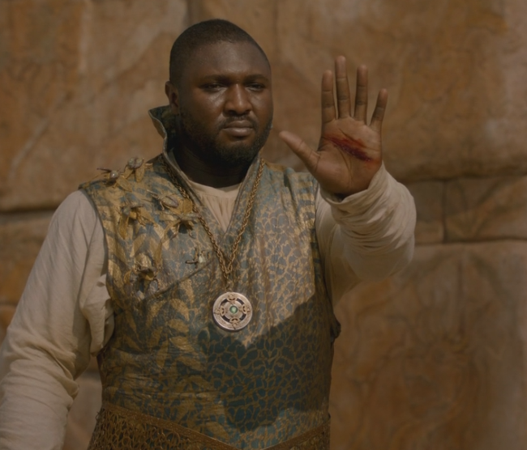

Monday, October the 6th, 2014
back to: title, date or indexes
There is a scene in the second series of Game Of Thrones where Daenarys Targaryen and her raggle-taggle band of Dothraki followers, having struggled across the vast and desolate Red Wastes, their food and water supplies exhausted, seek entrance to the walled city of Qarth. They are met, outside the gates, by the Thirteen, the ruling council, whose oleaginous spokesman refuses to let them enter. As the Mother of Dragons points out, not unreasonably, this dooms them to certain death. The spokesman is unmoved. How to resolve the impasse?
At this point, another member of the Thirteen, who has been lurking at the back of the group, steps forward. When his own arguments in favour of allowing the travellers in fail, he announces “I invoke Sumai!” He then unsheathes his dagger and slices a nasty cut in his own hand. Now the gates of Qarth are thrown open, and Daenarys and her “Dothraki savages” are ushered in, and saved.
I was going to praise writer George R. R. Martin for this touch of brilliance, until I learned—from one of the terrifyingly erudite websites devoted to the minutiae of the Game Of Thrones universe—that the scene is absent from the original books, and was devised for the television series. No explanation is ever offered for Sumai, or what precisely its invocation might mean in any other circumstances, and nobody ever refers to it again. Yet I am lost in admiration for it as a narrative technique to keep the story chugging along. I shall use it myself, and commend it to any other writer who reaches a sticking point in their story. The bit with the dagger and the blood can be modified, or left out entirely. But is there a single work of fiction that could not be improved by having a character, at some point, declaiming portentously “I invoke Sumai!”? I think not.
I have prepared a supply of slips of paper on which is typed “I invoke Sumai!”, said followed by a blank space. I intend, shortly, to work my way systematically through the volumes of fiction on the Key bookshelves, affixing with glue a slip at a point in each book where the narrative threatens to get stuck in a cul de sac, and then writing in an apt character name. The effect would be jarring if the phrase were to be spoken invariably by rogue member of the Thirteen Xaro Xhoan Doxos. Far better that it is put into the mouth of a character with whom we have grown familiar in each particular novel, say for example Humbert Humbert or Elizabeth Bennett or Josef K. or Bartleby the scrivener.
Invoking Sumai may also come in handy in real life. I am sure there are times, for example when you are leaning insouciantly against a mantelpiece at a sophisticated cocktail party, when the conversation palls and you are lost for words. Now, all you need do to avert social discomfort is to announce “I invoke Sumai!”. The ice will be broken, and stay broken, if I am correct.

Xaro Xhoan Doxos invokes Sumai
Hooting Yard on the Air, November the 6th, 2014 : “If You Go Away” (starts around 10:33)